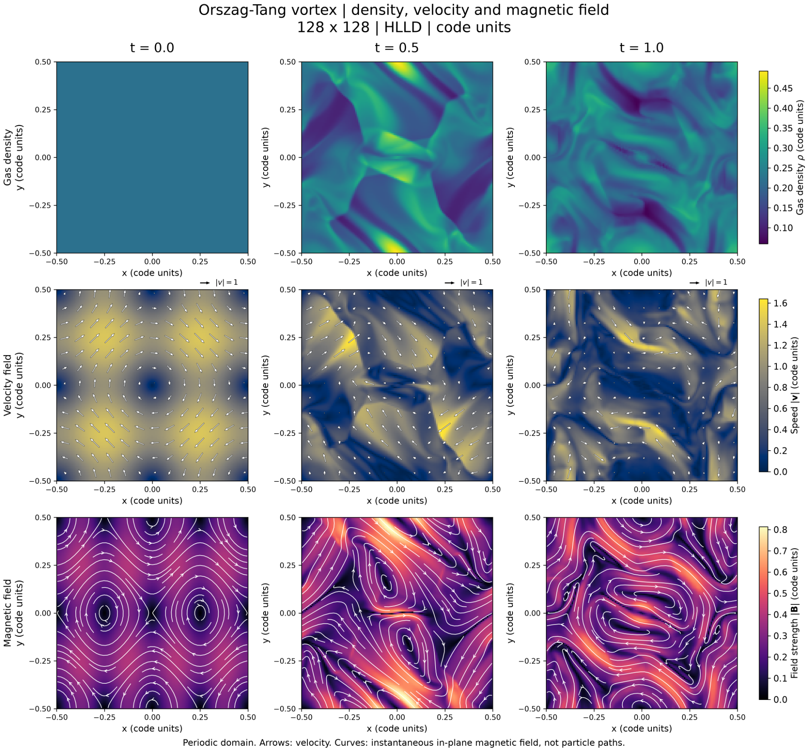
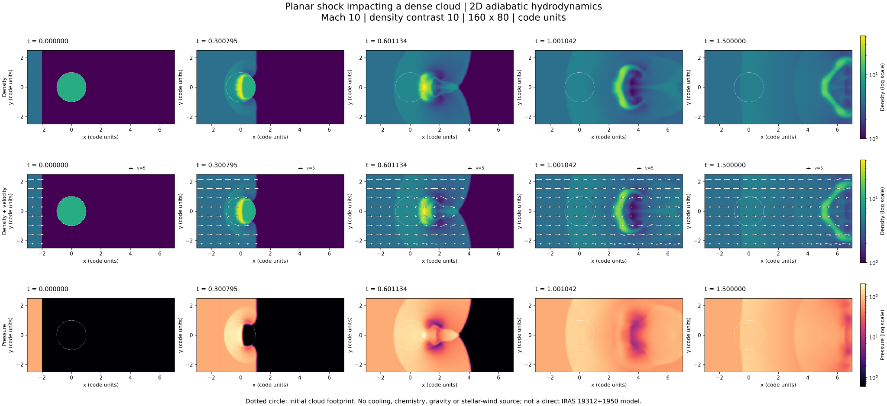

週末の昼下がり、以前から少し触ってみたかった数値流体シミュレーションを動かしてみました。使ったのは、天体物理の研究でも利用されている公開コード「Athena++」です。今回の目的は論文を書くことではありません。ガスや磁場の運動を実際に計算し、それを自分の目で眺めてみたい、という純粋な興味から始めた実験です。
計算環境の準備や実行スクリプトの作成には、AIコーディング支援ツールのCodexを使いました。研究室の計算機ではなく、手元のWindows PCとWSL2上のLinux環境を利用しています。ただし、AIに指示したからといって、計算結果が自動的に正しくなるわけではありません。元の問題設定を確かめ、終了時刻や保存則を点検し、そのうえで図を読み解く必要があります。
今回は、磁場とガスの相互作用を調べる「Orszag–Tang vortex」と、衝撃波が高密度の雲に衝突する「Shock–Cloud Interaction」という、二つの標準問題を試しました。最初から複雑な天体を再現するのではなく、基本的な物理現象を、できるだけ単純な状況で観察するという趣向です。
1．最初は一様だったガスに、複雑な模様が生まれる
最初の実験は、Orszag–Tang vortex（オルザグ＝タン渦）という、磁気流体力学（MHD）の有名なテスト問題です。MHDでは、ガスの密度・圧力・速度だけでなく、磁場も時間とともに計算します。磁場は荷電粒子に力を及ぼしますが、ガス全体が正または負に帯電している必要はありません。プラズマは全体としてほぼ電気的に中性でも、電流や磁場を通じて力学的に振る舞います。
今回用いたのは、磁場と流体が十分強く結び付いていると仮定する「理想MHD」です。電離率やイオンと中性粒子の衝突を個別に計算するものではありません。
正方形の領域を128×128個の格子に分割し、最初に一様なガス密度と圧力を与えます。その一方で、速度と磁場には、場所によって向きや大きさが変わる規則的な模様を設定します。つまり、初めは密度に何の模様もないのに、内部ではすでにガスが動き、磁場も存在しているわけです。


上段の左端、計算開始時刻の密度マップは一様な色です。ところが、時間が経過すると明るい帯や暗い領域が現れ、さらに細い筋状の構造へ発展します。密度が高くなった場所は圧縮されたガスに、低くなった場所は希薄になったガスに対応します。
では、その模様はどこから生まれたのでしょうか。
中段の矢印を見ると、初期には規則的だった速度場が次第に変形し、流れの速い場所と遅い場所、収束する場所と離れる場所が生まれています。同じ時刻の下段では、磁力線も大きく曲がっています。ガスの運動が磁場を変形させ、変形した磁場がローレンツ力を通じてガスの運動に影響する。この相互作用を計算しているのです。
MHDの運動方程式には、普通の圧力勾配に加えて磁場による力が現れます。磁場の効果は、直感的には「磁気圧」と「磁気張力」に分けて考えられます。磁場が強い場所では磁気圧の勾配が働き、曲がった磁力線は張力に対応する力を及ぼします。もちろん、図の形だけから、どちらの力がどの場所で卓越しているかまでは分かりません。それを知るには、力の各成分を改めて計算する必要があります。
この計算では、境界を越えた流れが反対側から再び入ってくる「周期境界条件」を使っています。天体の輪郭を模したものではなく、数値計算法の性質を検証するための理想化された空間です。Orszag–Tangという名称は1979年の研究に由来しますが、ここで解いたのはAthena++に実装された圧縮性・断熱の理想MHDテストであり、元論文の計算をそのまま複製したものではありません。
それでも、一様な密度からこんなに複雑な構造が生まれる様子を眺めていると、流体方程式の非線形性が実感できます。
2．衝撃波が高密度のガス雲にぶつかると
二つ目は、もう少し天体物理に近い現象です。高速で進む衝撃波が、周囲より密度の高いガス雲に衝突するところを計算しました。
まず状況を模式的に示しておきます。左から衝撃波が進み、中央にある雲へぶつかります。雲は周囲のガスより密度が高く、当初は円形の断面をしています。

今回の設定では、衝撃波のマッハ数は10、雲と周囲の密度比は10。磁場は入れず、放射冷却も考慮しない、二次元の断熱流体計算としました。格子数は160×80です。


時刻0では、左側の衝撃波面と、中央の円形の雲が分かれて見えます。衝撃波が近づき、時刻0.3ごろには、雲の衝撃波側に明るい高密度の領域が現れます。衝撃波が雲を強く圧縮しているのです。
密度の高い雲の内部を伝わる衝撃波は、一般に周囲の低密度ガスを伝わる衝撃波より遅くなります。したがって、外側の衝撃波が先に進む間に、雲は高圧のガスに取り囲まれ、圧縮と加速を受けます。時刻0.6ごろには、もとの丸い形は崩れ始め、後方に複雑な流れが生じています。時刻1.0から1.5にかけては、弓状の高密度構造が右へ進んでいくのが見えます。
ここで注意が必要なのは、密度の高い部分が、すべて最初の雲に由来するとは限らないことです。周囲のガスも衝撃波によって圧縮されるため、この図だけでは両者を厳密に区別できません。雲の物質がどこへ運ばれたかを知りたければ、受動スカラーなどの追跡用の変数が必要です。
衝撃波と雲の相互作用を考える際には、「cloud-crushing time（雲の圧縮時間）」という尺度がよく使われます。雲と周囲ガスの密度比を \(\chi\)、雲の半径を \(R\)、周囲を進む衝撃波速度を \(v_{\mathrm{s}}\) とすれば、強い衝撃波について、おおよそ次のように表せます。
今回のコード単位で \(\chi = 10\)、\(R = 1\)、\(v_{\mathrm{s}} = 10\) とすると、\(t_{\mathrm{cc}}\) は約0.316です。雲が衝撃波に襲われてから、内部に伝わる衝撃波が特徴的な距離を進むまでの目安になります。ただし、これだけで雲が完全に破壊される時刻を決められるわけではありません。
図にはガス雲の圧縮、変形、加速がはっきり現れています。一方、細かな混合や不安定性の進み方まで定量的に議論するには、今回の格子は粗いものです。雲の半径に相当するのは約16セルで、高解像度の収束計算ではありません。ここは、結果の面白さと科学的な限界を区別しておきたいところです。
3．計算が終了することと、正しいことは違う
今回、二つの計算はいずれも指定時刻まで正常に走り、図の作成まで完了しました。しかし、計算機が「終了コード0」を返しただけで、答えが物理的に正しいと判断できるわけではありません。
最初のOrszag–Tang問題では、保存されたデータに非有限値（NaNやInf）がなく、密度と圧力は正の値を保っていました。質量の相対変動は保存済みVTKデータからの評価で最大約 8.38×10⁻⁹ でした。これは基本的な健全性を示しますが、解像度収束や磁場の発散制約を独立に検証したことまでは意味しません。
衝撃波と雲の実験でも、全16時刻で密度・圧力は正、非有限値は見つからず、初期衝撃波はRankine–Hugoniot関係と整合していました。一方、出入りするガスの流束を用いた概算の質量収支には約1.1％の残差が報告されています。この領域はガスが出入りするため、領域内の質量が一定である必要はありませんが、厳密な収支検証としてはまだ改善の余地があります。
こうした確認を挟むことも、数値実験の楽しさの一部です。美しい画像が出たことと、その画像をどこまで信用してよいかは、別々に考えなければなりません。
4．星周ガスの研究につながるだろうか
私が研究している晩期型星や複雑な星周分子ガスでも、質量放出による流れ、衝撃波、密度の高い領域の形成は重要な問題です。とりわけIRAS 19312+1950のように、複数の速度成分や入り組んだ分子ガス構造を示す天体を考えると、こうした計算を観測と結び付けてみたい気持ちになります。
ただし、今回の二つの標準問題はIRAS 19312+1950を再現したモデルではありません。恒星風の幾何学、分子の化学反応、放射冷却、分子線の励起・放射輸送など、実際の観測と比較するために必要な物理がまだ入っていないからです。二つ目の計算も、三次元の球状雲ではなく、二次元Cartesian格子上の円形断面を扱っています。
次に進むなら、単純な恒星風と周囲の高密度ガスの相互作用を計算し、速度分布から模擬的な位置―速度図を作ってみるのが面白そうです。現実の分子線強度を再現するには、そこからさらに化学や放射輸送を考える必要があります。
研究に結び付くかどうかは、まだ分かりません。けれども、物理的な問題を考え、コードに計算させ、結果を眺め、次の疑問を思い付く。そういう往復を、週末の昼下がりに手元のPCで気軽に楽しめるようになったのは、なかなか愉快なことだと思いました。
計算条件と資料
| 項目 | Orszag–Tang vortex | Shock–Cloud Interaction |
|---|---|---|
| 計算コード | Athena++ | Athena++ |
| 方程式 | 圧縮性・断熱の理想MHD | 断熱流体力学（磁場なし） |
| 格子 | 128×128（2D） | 160×80（2D） |
| 数値流束 | HLLD | HLLC |
| 時間積分 | VL2 | VL2（公式入力に基づく） |
| 断熱指数 | 5/3 | 5/3 |
| 終了時刻 | t = 1.0 | t = 1.5 |
| 初期条件 | 一様密度・圧力、非一様な速度・磁場 | Mach 10の平面衝撃波、密度比10の高密度雲 |
| 境界 | 周期境界 | 上流で衝撃波通過後の流れを維持、他は流出境界 |
| 長さ・時間 | コード単位（実際の天体スケールではない） | コード単位（実際の天体スケールではない） |
再現情報：最初のOrszag–Tang計算で使用したAthena++ソースのコミットIDは 053bc738d5c85dac717326b4338b34c7db4e715d。衝撃波計算の正確なソースコミット・オプション・ログは、掲載前にローカルの当該実験README・manifestで最終照合してください。図3の中間時刻は図に記載された実時刻を採用しています。図1の t = 0.5 は、同じ設定で終了時刻を0.5にした別の補助計算によるものです。
文献・ソフトウェア
- Stone, J. M., Tomida, K., White, C. J. & Felker, K. G. (2020), The Athena++ Adaptive Mesh Refinement Framework: Design and Magnetohydrodynamic Solvers, ApJS, 249, 4. https://doi.org/10.3847/1538-4365/ab929b
- Orszag, S. A. & Tang, C.-M. (1979), Small-scale structure of two-dimensional magnetohydrodynamic turbulence, J. Fluid Mech., 90, 129–143. https://doi.org/10.1017/S002211207900210X
- Klein, R. I., McKee, C. F. & Colella, P. (1994), On the Hydrodynamic Interaction of Shock Waves with Interstellar Clouds. I. Nonradiative Shocks in Small Clouds, ApJ, 420, 213–236. https://ntrs.nasa.gov/citations/19950035611
- Athena++公式ソースコード：https://github.com/PrincetonUniversity/athena
掲載する図は、今回のローカル数値計算結果2点と、初期条件を説明する自作の模式図1点です。画像検索から取得した参考画像ではありません。